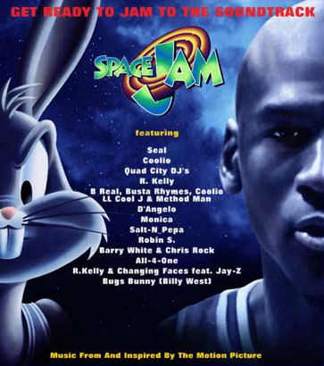
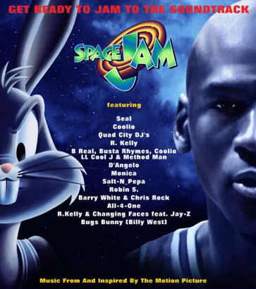

Space Jam Soundtrack
Space Jam Soundtrack
Space Jam Tracks
Featured Artists
Fly Like An Eagle
Seal follows his sensational 1995 soundtrack performance "A Kiss From A Rose" (Batman Forever) with this cover of the classic Steve Miller Band hit, "Fly Like An Eagle." Seal produced the track himself with none other than D'Angelo guesting on keyboards.
Space Jam
"Space Jam," from QuadraSound/Big Beat/Atlantic recording group Quad City DJ's, again unites hit-makers Nathaniel "C.C. Lemonhead" Orange and Johnny "Jay Ski" McGowan -- the genre-breaking production team whose sizzling track record already guarantees them a place in pop music history. In 1993 the duo tapped the motherlode with an out-of-nowhere sensation called "Whoot (There It Is)" by their group 95 South. This year they repeated that success with Quad City DJ's "Ride It (The Train)," which recently became a dancefloor anthem nationwide.
I Believe I Can Fly
Michael Jordan personally invited "The King Of R & B," multi-platinum Jive recording artist R. Kelly to create the first single from the Space Jam soundtrack. Basketball-lover Kelly's "I BELIEVE I CAN FLY" follows the singer's current top-ten single, "I Can't Sleep Baby (If I)."